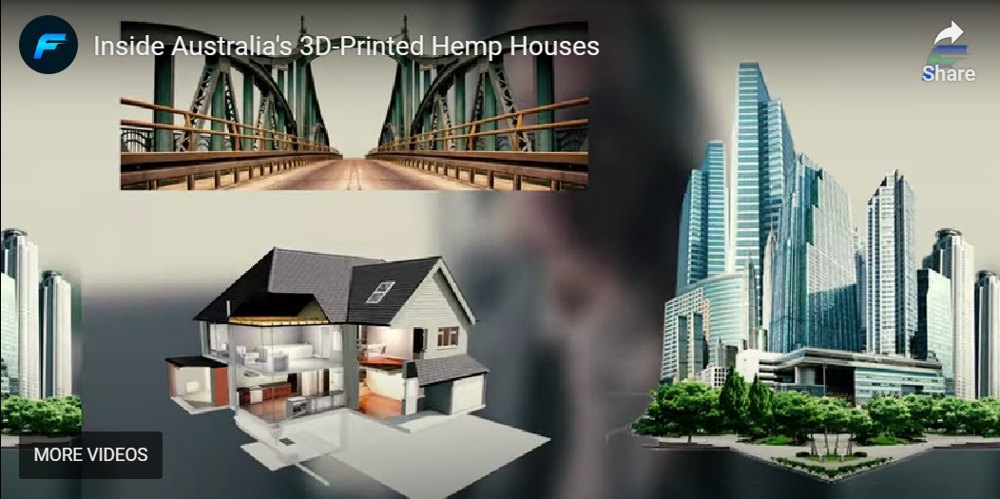
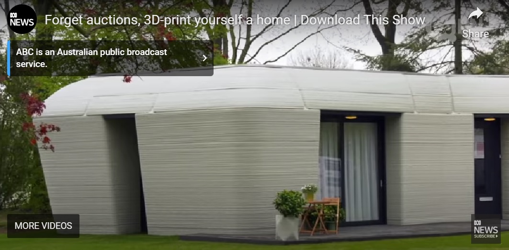
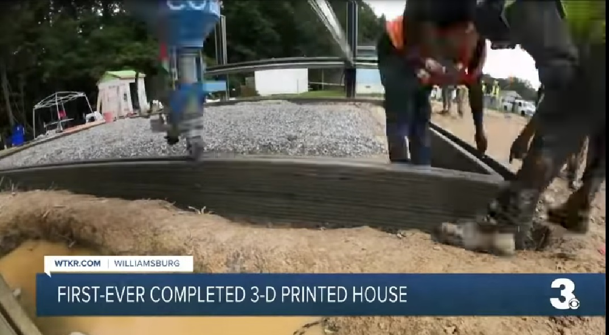
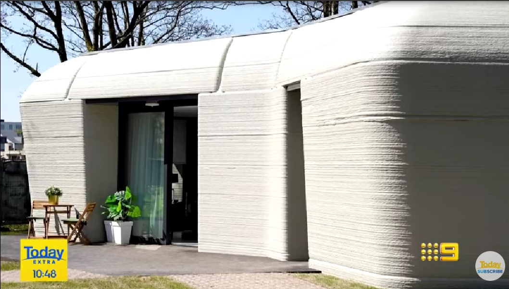

Check out the race to build Australia’s First 3D-Printed House!
3D-printed houses are created using very large 3D printers that, unlike smaller hobbyist or other types of industrial units, are able to extrude concrete, plastic, or other building materials through nozzles, in order to gradually build up a 3D object the size of a house. There are five main benefits of 3D printing technology when it comes to building houses: 1. Lower cost – 3D buildings have the potential to dramatically reduce the cost of materials and labour. One house in China was successfully built for less than $5,000. A 3D printer can build the walls of a house in as little as two days versus weeks or months with traditional construction materials.
   
3D HOMES EXTRAVAGANZA
©2025 All rights reserved.